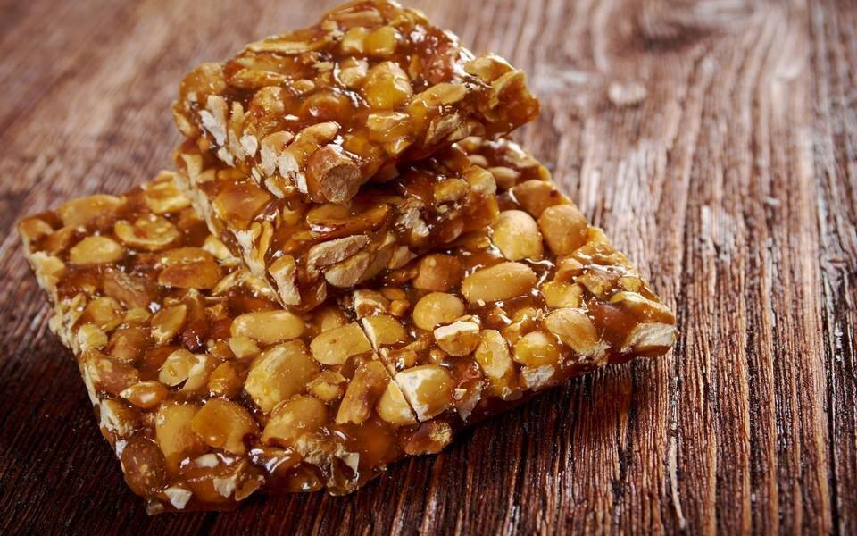

Рецепт Гозинаки

Ингредиенты:
- 300 г грецких орехов
- 200 г меда
- 100 г сахара
- 1/2 ч. ложки ванильного сахара (по желанию)
- Щепотка соли
- 1 ст. ложка лимонного сока (по желанию)
Приготовление:
- Нарежьте грецкие орехи крупными кусочками и обжарьте их на сковороде до золотистой корочки.
- В кастрюле смешайте мед, сахар и щепотку соли и нагревайте, помешивая, до растворения сахара.
- Когда сироп закипит, добавьте орехи и перемешайте. Снимите с огня, добавьте лимонный сок и ванильный сахар.
- Вылейте массу на противень, застеленный пергаментом, и разровняйте.
- После охлаждения нарежьте на кусочки.
- Подавайте как десерт или перекус.